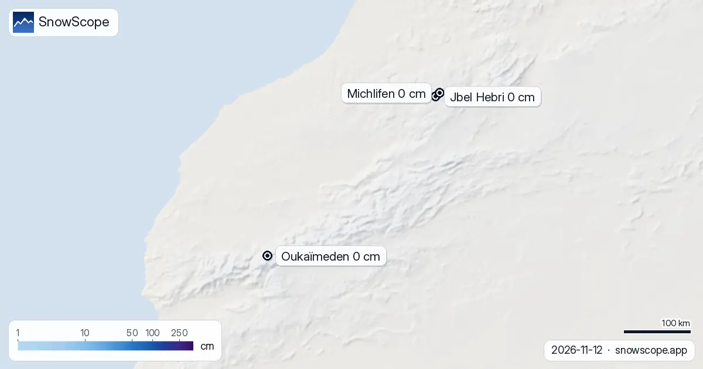
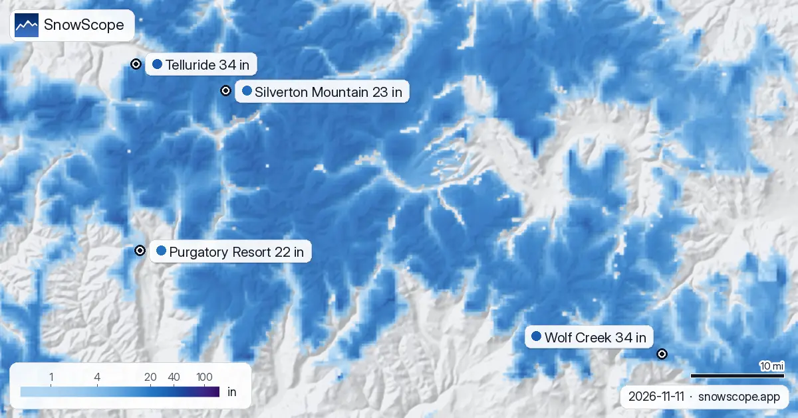
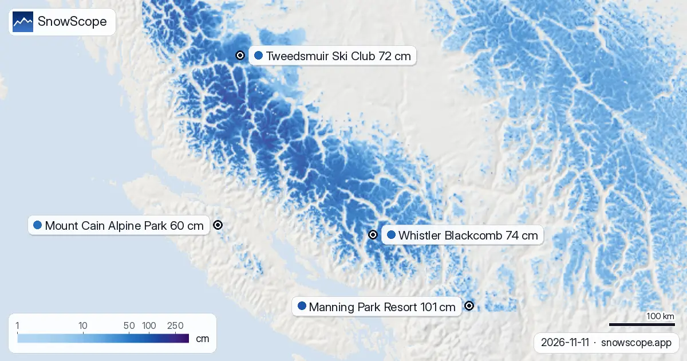

Bollettini neve
Bollettini neve quotidiani per sciatori: dove c'è neve, cosa arriva e dove sciare, dalla mappa neve di SnowScope e dalle stazioni di misura. Ogni numero viene dai dati del giorno.

Germania a dicembre: la Zugspitze e la vetta del Fellhorn avevano 30 cm a metà dicembre in almeno 9 inverni su 10; Sudelfeld, Brauneck e Feldberg raramente.

Puy-Saint-Vincent offre uno skipass giornaliero adulto a 44 EUR con buona neve a dicembre in quota, confrontato qui con il grande vicino Serre Chevalier.

In tutti i nostri 46 inverni passati, a metà montagna di Grand Targhee c'erano sempre almeno 20 in (50 cm) di neve il 15 dicembre. Il biglietto giornaliero online va da 125 $ a 180 $ a seconda della data.

Oppdal a dicembre: 60 cm alla base (585 m) in un tipico 15 dicembre, 93 % degli inverni con 30 cm a metà dicembre, meglio della base di Trysil.

Grimentz-Zinal offre 71 km di piste e una neve sicura in alta quota per il tuo viaggio di dicembre, con skipass di 6 giorni a CHF 339,00.

Austria prima di Natale: Galtür 258 EUR e Kühtai 269 EUR per 6 giorni, con 30 cm in oltre il 90 % degli inverni; i ghiacciai costano di più, le piccole stazioni sono un azzardo.

Stai pianificando un viaggio a dicembre a Baqueira Beret? Guarda la nostra cronologia della neve, i prezzi dei biglietti a partire da 70,00 € per un pass giornaliero e come si confronta con Astún-Candanchú.

Classifichiamo le stazioni sciistiche francesi in base alle probabilità di neve a dicembre e ai prezzi dei pass, partendo da 36,00 EUR per un pass giornaliero adulto a Les Karellis.

A Oukaïmeden, dicembre dà 18 cm a metà montagna in un mese tipico, contro 44 cm a febbraio e 53 cm a marzo. Cosa dicono 46 inverni sul mese giusto per sciare.


Galtür a dicembre: 55 cm a metà montagna in un tipico 15 dicembre, 93 % degli inverni con 30 cm a metà dicembre; giornaliero di bassa 55,50 EUR fino al 18 dicembre.

Geilo a dicembre: 57 cm a metà montagna in un tipico 15 dicembre, 96 % degli inverni con 30 cm a metà dicembre; giornaliero da 590 NOK (circa 56 EUR).

Grandvalira viene spesso venduta come una meta economica per sciare a dicembre, eppure la neve naturale alla base è in media di soli 9 cm negli scorsi inverni.

Hemsedal a dicembre: 70 cm a metà montagna e 106 cm in vetta in un tipico 15 dicembre, ma 32 cm alla base; Geilo vicino da 590 NOK al giorno.

Ghiacciaio di Hintertux a dicembre: 98 cm a 3245 m e 52 cm a metà montagna in un tipico 15 dicembre; giornaliero 82 EUR, 6 giorni 399 EUR.

Confronta le probabilità di neve a dicembre e i prezzi verificati degli skipass a partire da 40,00 EUR nelle aree sciistiche italiane per la tua gita in auto nel weekend.

Sciare a Kühtai a dicembre: 60 cm alla base (1939 m) in un tipico 15 dicembre, skipass 6 giorni in bassa stagione a 269 EUR fino al 18 dicembre.

Les 2 Alpes raggiunge i 3.511 m per neve abbondante a dicembre 2026, con un skipass adulti di 6 giorni a 266,50 EUR.

Les Karellis offre 45 km di piste e uno skipass adulto di 6 giorni a 191,00 EUR con una probabilità del 98 % di neve a metà montagna a fine dicembre.

Levi a dicembre: 38 cm in un tipico 15 dicembre, 91 % degli inverni con 30 cm a Natale, e più neve di un tempo; giornaliero 60 EUR, online 57 EUR.

Scia a Livigno per 51,50 EUR al giorno prima del 18 dicembre, quando la neve in cima raggiunge i 30 cm nel 100 % degli inverni passati.

A Michlifen, l'89 % degli inverni non ha quasi neve il 15 dicembre (meno di 5 cm). Cosa dicono 46 inverni sullo sci nel Medio Atlante a dicembre.

Montgenèvre ha 56 cm di neve abituale a dicembre alla base, offrendo agli sciatori del weekend una copertura migliore rispetto a Sestriere, oltre il confine.

Sciare a Obertauern a dicembre: 43 cm in un tipico 15 dicembre a metà montagna, skipass 6 giorni a 331 EUR prima di Natale. Storico neve e prezzi.

Oukaïmeden a metà dicembre: 16 cm a metà montagna in un inverno tipico, 50 cm o più in solo l'11 % degli inverni. Data per data, cosa dicono 46 inverni.

Oukaïmeden è a 50 km in linea d'aria da Marrakech. Come riuscire in un weekend di sci a dicembre: quando partire, quali probabilità di neve, cosa si sa dei prezzi.

Les 3 Vallées: 75,70 € al giorno dal 5 al 18 dicembre 2026. Oukaïmeden: nessuna tariffa ufficiale online, 16 cm a metà montagna a metà dicembre. Il confronto onesto.

Pila sopra Aosta offre uno skipass giornaliero fisso a 60,00 EUR e neve affidabile a dicembre sulle quote alte.

Gli impianti di Saas-Fee raggiungono i 3.556 m, dove la nostra storia della neve mostra che il 100 % degli inverni passati ha almeno 30 cm di neve entro metà dicembre.

12 località nordiche a dicembre: Hemavan, Hemsedal e Geilo avevano 30 cm a metà montagna a metà dicembre nel 96-100 % degli inverni; giornalieri finlandesi 58-60 EUR.

Probabilità di neve a dicembre su 46 inverni e prezzi giornalieri verificati: Ski Cooper 49 $, Les 3 Vallées 75,70 €, Oukaïmeden senza tariffa ufficiale. Dove funziona una giornata di sci economica a dicembre.

Scopri le piste tranquille di St-Luc Chandolin, dove la neve a metà montagna ha raggiunto i 30 cm nel 98 % degli inverni a fine dicembre.

Trysil a dicembre: 44 cm a metà montagna in un tipico 15 dicembre, 83 % degli inverni con 30 cm a metà dicembre; i prezzi sono dinamici, quindi prenotate presto.

Valloire-Valmeinier offre 131 km di piste e il 98 % di probabilità di avere 30 cm di neve a metà montagna entro metà dicembre.

Zugspitze a dicembre: 122 cm a 2627 m in un tipico 15 dicembre, giornaliero adulti online 70,50 EUR; Garmisch-Classic sotto 69 EUR con molta meno neve.

Mölltaler Gletscher a dicembre: 66 cm all'impianto più basso (2103 m) e 128 cm a metà montagna in un tipico 15 dicembre; 6 giorni in bassa stagione 332 EUR.

Mt. Baker a dicembre: 46 in (116 cm) di neve a metà montagna in un tipico 15 dicembre, e uno skipass da 98,80 $ dal lunedì al giovedì, venduto solo in giornata alla cassa.

Un principiante prudente può fidarsi di Courmayeur a dicembre, quando la media a metà montagna è di 60 cm di neve nei nostri inverni passati?

Åre a dicembre: 40 cm a metà montagna in un tipico 15 dicembre, 89 % degli inverni con 30 cm a metà dicembre, ma forte calo in vetta dagli anni '80.

Superficie innevata: 49.467 sq mi (128.120 km²) il 11 novembre, 49.050 sq mi (127.040 km²) oggi, 64.429 sq mi (166.870 km²) previsti per il 16 …

Da oggi al 16 novembre ci aspettiamo 5 in (12 cm) a Stowe, 4 in (11 cm) a Bolton Valley Resort e 4 in (10 cm) a Sugarbush Resort. I nostri valori …

201.390 km²: è la superficie innevata che il nostro modello conta oggi nel Canada occidentale. L'ultima vista serena di ogni luogo, fino al 13 …

Condizioni per sciare a Deer Valley il 13 novembre 2026: ancora nessuna vera neve al suolo, circa 4 in vicino alla vetta con la perturbazione del weekend, pioggia sul lato basso dell'East Village sotto circa 6,700-7,600 ft e 11 in in alto nella settimana.

È un buon inizio d'inverno nel Nord-est degli USA? La neve di oggi in 4 località nel Nord-est degli USA, confrontata con la stessa data in ciascuno …

Da oggi al 16 novembre ci aspettiamo 13 in (34 cm) a Bear Valley, 13 in (34 cm) a Dodge Ridge e 13 in (33 cm) a Badger Pass. Una parola sui numeri: i …

Previsione delle nevicate a Park City (Utah) il 13 novembre 2026: per ora quasi niente neve al suolo, circa 5 in vicino alla vetta con la perturbazione del weekend e limite delle nevicate a 7,400-7,700 ft, pioggia alla base e circa 12 in in alto nella settimana.

Stratton per quota, dal nostro modello: vetta 4 in (10 cm) (3.881 ft / 1.183 m), metà 2 in (6 cm) (2.936 ft / 895 m), base 1 in (2 cm) (1.991 ft / …

La riserva di neve si sta riempiendo come al solito? Abbiamo confrontato la neve di oggi in 5 località nel Canada occidentale con la stessa data in …

Previsioni neve ad Alpental il 13 novembre 2026: circa 1 in sulla parte alta, pioggia quasi fino in vetta nel weekend con il limite verso 5,400-5,600 ft, poi 4-5 in di pioggia e neve miste in alto la prossima settimana.

Punto neve a Bogus Basin per chi scia da Boise il 13 novembre 2026: ancora niente neve al suolo, pioggia e neve bagnata nel weekend con il limite verso 6,300-6,800 ft, poi aria più fredda e circa 8 in in vetta entro la prossima settimana.

39 in (99 cm) sui pendii alti: ecco perché Telluride è in cima alla nostra lista. Altezza oggi, neve fresca delle ultime 72 ore, previsione: messe …

La mappa delle piste di Sillian (Hochpustertal) con il nostro strato di neve il 13 novembre 2026: 8,6 cm in vetta a 2399 m, pendii bassi scoperti e una settimana di pioggia e neve miste con il limite verso 1.800-2.000 m.

Revelstoke, previsioni neve: fino a 10–21 cm attesi entro il 16 novembre (Canada occidentale). A Whistler Blackcomb lo zero termico sale tra 1.500 m …

Condizioni della neve a Silvretta Montafon il 13 novembre 2026: 4,5 cm in vetta a 2421 m, metà montagna e valle ancora scoperte, circa 40 cm in arrivo in quota questa settimana, pioggia a valle sotto i 1.500 m.

Bollettino neve di Lech Zürs del 13 novembre 2026: circa 6 cm in vetta (2436 m) e a metà montagna, niente a Lech a 1430 m. Questa settimana 42 cm in alto secondo la nostra previsione, fino a 91 cm secondo altre, pioggia e neve mista intorno ai 1400 m. E perché Lech è il lato nevoso dell'Arlberg.

Modello più previsione sulle Alpi oggi danno neve fresca polverosa. Cosa indossare, cosa portare e quando sciare, località per località. I consigli …

Altezza neve a St. Anton am Arlberg il 13 novembre 2026: circa 1 cm in vetta (2642 m), 5 cm a metà montagna, niente in paese. Questa settimana 42 cm in vetta e 33 cm a metà, pioggia sotto i 1480 m circa. Quanta neve serve per i pendii ripidi.

Dévoluy, tendenza neve: fino a 24–32 cm possibili entro il 16 novembre (Alpi). Fino al 16 novembre la nostra previsione indica 35 cm a Orcières …

Dal 11 novembre la copertura nevosa è passata da 39.090 km² a 76.100 km²; il 16 novembre la previsione indica 57.910 km². Pfelders ha oggi il manto …

Le località sciistiche dell'Atlante oggi non trattengono neve sulle piste. La neve è immagazzinata solo sulle vette più alte: circa 40 km² di …

Bollettino neve di Obergurgl del 13 novembre 2026: circa 20 cm in vetta (3024 m), 5 cm a metà montagna, niente agli impianti più bassi (1784 m). Previsioni della settimana: 34 cm in alto, 21 cm in basso, quota neve intorno ai 1700 m. E il solito inizio di stagione.

Altezza neve a Sölden il 13 novembre 2026: circa 9 cm in vetta (3245 m), 5 cm a metà montagna, niente in valle a 1346 m. 25 cm previsti in alto questa settimana, pioggia sotto i 1620 m circa. Ghiacciaio contro paese, con 46 inverni passati.

Nevicate a Val Thorens, 13 novembre 2026: 27 cm caduti in vetta (3175 m) e 17 cm a 2498 m in sette giorni; l'altezza della neve è 50 cm e 8 cm. Prossimi sette giorni: 86 cm in vetta, 73 cm a 2498 m, limite delle nevicate ben sotto il paese. La stagione abituale da 46 inverni.

L'altezza della neve a Chamonix il 13 novembre 2026, quota per quota: niente sul fondovalle, 1 cm a 2001 m, 12 cm in cima a Brévent-Flégère (2486 m), da 5 a 24 cm in cima ai Grands Montets (2768 m). Circa un metro previsto in quota questa settimana, pioggia in valle. Quanta neve fa di solito a Chamonix, da 46 inverni.

Le nostre scelte sono La Grave, Pfelders e Les Deux Alpes: abbiamo guardato l'altezza neve di oggi, la neve fresca delle ultime 72 ore e la …

Altezza neve a Ischgl il 13 novembre 2026: circa 5 cm in vetta (2868 m), 4 cm a metà montagna, niente in valle a 1352 m. Fino a 42 cm sulla cresta questa settimana, pioggia nel Paznaun sotto i 1570 m circa. E valle contro cresta in 46 inverni.

Bollettino neve di Les Menuires del 13 novembre 2026: 28 cm in vetta (2838 m), niente a terra a 2112 m né a 1386 m. Circa 80 cm attesi in vetta in sette giorni, limite delle nevicate intorno a 1500-1700 m. Perché Val Thorens, 450 m più su nella stessa valle, ne ha già di più.

Lo zero termico decide se le montagne accumulano neve o scaricano pioggia: nei prossimi giorni la nostra previsione lo colloca sui Pirenei tra …

Condizioni neve a Tignes il 13 novembre 2026: 42 cm in vetta (3447 m), 12 cm a 2503 m, fondovalle senza neve a 1559 m e 99 cm previsti in vetta in sette giorni, con pioggia sotto i 1700 m circa. Il confronto con 46 inverni passati.

Neve fresca a La Grave: 61 cm nelle ultime 72 ore, compresi 3 cm nelle ultime 24. Il nostro modello neve ora mette circa 78 cm sui pendii superiori. …

Il nostro modello neve prevede che Whistler Blackcomb riceverà 88 cm di neve fresca entro lunedì 16 novembre 2026, guidando i resort globali.

La nostra previsione mette lo zero termico nel Nord-est degli USA tra 0 ft (0 m) e 4.593 ft (1.400 m) nei giorni a venire. Il giovedì 12 novembre, …

C'è più neve di un anno fa? Abbiamo confrontato oggi con il 12 novembre dell'inverno scorso in 4 località nel Nord-est degli USA: 0 hanno più neve …

Tra 1.380 m e 3.410 m: è lì che la nostra previsione colloca lo zero termico nel Canada occidentale nei prossimi giorni. Nelle ore più miti la quota …

Le mappe di oggi guardano due settimane avanti sui Pirenei, dal 13 novembre al 26 novembre. Vengono da i due modelli globali che arrivano a due …

Dove nevicherà nel Nord-est degli USA tra il 13 novembre e il 26 novembre, e quanto? Abbiamo interrogato i due modelli globali che arrivano a due …

Quattordici giorni di neve fresca su una mappa, dal 13 novembre al 26 novembre, per ogni montagna nel Canada occidentale: è ciò che si aspettano i …

A Telluride la quota cambia tutto: il nostro modello indica 0 in (0 cm) alla base (8.734 ft / 2.662 m), 2 in (6 cm) a metà montagna (10.620 ft / …

Ecco le nuove mappe delle prossime due settimane sulle Alpi, dal 13 novembre al 26 novembre: la neve fresca attesa sul terreno, letta da i due …

Ecco le nuove mappe delle prossime due settimane sull'Atlante (Marocco), dal 13 novembre al 26 novembre: la neve fresca attesa sul terreno, letta da …

Le nostre mappe a due settimane mostrano dove dovrebbe cadere neve fresca nell'Ovest degli USA tra il 13 novembre e il 26 novembre, secondo i due …

Whistler Blackcomb, 116 cm di neve: l'altezza di oggi sui pendii alti (12 novembre). 162 cm: è la neve di oggi sui pendii alti di Mount Washington …

Kirkwood, tendenza neve: fino a 16 in possibili entro il 15 novembre (Ovest degli USA). Fino al 15 novembre la nostra previsione indica 23 in (58 cm) …

Mount Cain Alpine Park, neve fresca rispetto alla regione: 15 cm in 72 ore (12 novembre). La superficie innevata è passata da 281.250 km² il 10 …

Cimarron Mountain Club, 39 in di neve: l'altezza di oggi sui pendii alti (12 novembre). 42 in (106 cm): è la neve di oggi sui pendii alti di …

Il bollettino sci di Purgatory Resort (Durango, Colorado) dal nostro modello di neve: 3 in (7 cm) in vetta, base e metà montagna senza neve, da 4 a 7 in di neve fresca previsti nei prossimi sette giorni, e com'è un inverno abituale a Purgatory.

Mount Cain Alpine Park: quanta neve arriva? 37 cm entro il 15 novembre. Quanta neve arriva nel Canada occidentale, e dove? Fino al 15 novembre la …

Il nostro modello divide Piau-Engaly in tre quote: 2 cm in vetta (2.527 m), 0 cm a metà montagna (2.144 m), 0 cm alla base (1.762 m). Nelle ultime 72 …

Bollettino neve sull'Atlante (Marocco), 12 novembre. Località sciistiche dell'Atlante oggi: niente neve sulle piste. Neve solo sulle vette più alte: …

Bollettino neve sui Pirenei, 12 novembre. Guardando al 15 novembre, la previsione porta 33 cm a Cauterets Cirque du Lys, 29 cm a Piau-Engaly e 25 cm …

Le condizioni della neve a La Rosière nella nostra corsa del modello dell'11 novembre: 24 cm in vetta (2799 m), metà montagna e paese senza neve, e una previsione a sette giorni di 108 cm in vetta e 61 cm a metà montagna. Il versante soleggiato del Piccolo San Bernardo in numeri.

La neve all'Alpe Devero (Ossola, Piemonte) secondo il nostro modello: 2 cm in vetta (2201 m), niente più in basso, 36 cm di neve fresca prevista in vetta nei prossimi sette giorni. La piccola località senza auto e il suo inverno abituale in numeri.

Il bollettino neve di Les Arcs dal nostro modello: 34 cm in vetta (3205 m), 2 cm a metà montagna, base senza neve, e fino a 69 cm di neve fresca prevista in vetta nei prossimi sette giorni. Cosa ha di solito Les Arcs a novembre e dicembre.

Le condizioni della neve a Méribel dal nostro modello dell'11 novembre: 24 cm in vetta (2920 m), 1 cm a metà montagna, valle senza neve, e una previsione di 99 cm in vetta e 58 cm a metà montagna nei prossimi sette giorni. L'inverno abituale di Méribel in numeri.

La mappa delle piste di Isola 2000 con la neve di oggi: 9 cm in vetta, 7 cm a metà montagna, 2 cm alla base dopo 31 cm in una settimana, come sono disposti i settori Pelevos, Saint-Sauveur e Lombarde, e cosa porta un inverno abituale.

Ancora niente neve a Oukaïmeden: 0 cm a tutte e tre le quote, nulla negli ultimi sette giorni, nulla nella settimana che viene. Cosa porta un novembre abituale nell'Alto Atlante e quando puntare allo sci.

A 1.308 m a Dent de Vaulion, i 0 cm di oggi sono più di quanto questa data abbia portato in 34 dei 46 inverni passati (abituale: 0 cm): nella neve …

L'area bianca sulla mappa è passata da 45.820 km² (9 novembre) a 38.440 km² oggi, e la previsione dice 46.730 km² il 14 novembre. Glacier 3000: …

Les Deux Alpes, previsioni neve rispetto alla regione: 51 cm entro il 14 novembre. La superficie innevata è passata da 45.820 km² il 9 novembre a …

Bollettino neve sulle Alpi, 11 novembre. Tre ingredienti, una lista: l'altezza neve di oggi, la neve fresca delle ultime 72 ore e la previsione …

Dal 9 novembre la neve è passata da 40 km² a 20 km² oggi; per il 14 novembre la nostra previsione indica 10 km². Oggi le piste dell'Atlante sono …

C'è più neve di un anno fa? Abbiamo confrontato oggi con il 11 novembre dell'inverno scorso in 4 località sui Pirenei: 0 hanno più neve ora, secondo …

Secondo il nostro modello neve e la previsione, oggi sui Pirenei porta neve sottile di inizio stagione e aria mite che può lasciare una crosta. Qui …

Bollettino neve nel Nord-est degli USA, 11 novembre. Fino al 14 novembre la previsione indica 15 in (38 cm) a Okemo Mountain, 12 in (30 cm) a …

Nei prossimi giorni lo zero termico nell'Ovest degli USA dovrebbe muoversi tra 8.333 ft (2.540 m) e 13.780 ft (4.200 m), secondo la nostra …

Bollettino neve nell'Ovest degli USA, 11 novembre. Fino al 14 novembre la previsione indica 17 in (43 cm) a Mt. Shasta Ski Park, 15 in (39 cm) a …

C'è più neve di un anno fa? Abbiamo confrontato oggi con il 11 novembre dell'inverno scorso in 4 località nell'Ovest degli USA: 4 hanno più neve ora, …

È un buon inizio d'inverno nell'Ovest degli USA? 5 località nell'Ovest degli USA, 46 inverni passati, una data: ecco come si colloca oggi. Nettamente …

Dove andare a sciare nell'Ovest degli USA? Tre ingredienti, una lista: l'altezza neve di oggi, la neve fresca delle ultime 72 ore e la previsione …

38 cm in 72 ore: è la neve fresca caduta a Tweedsmuir Ski Club. Tweedsmuir Ski Club ha guadagnato 38 cm di neve nuova nelle ultime 72 ore, 35 cm dei …

Il nostro modello neve e la previsione per oggi nel Canada occidentale indicano neve fresca polverosa, una nevicata in arrivo, mattine ghiacciate e …

Abbiamo pesato la neve già al suolo, la neve fresca delle ultime 72 ore e quello che aggiunge la previsione, e abbiamo scelto Whistler Blackcomb, …

Il nostro modello neve prevede fino a 58 cm di neve fresca per La Grave, Francia, entro sabato 14 novembre 2026. Scopri dove altro è prevista neve.

Sopra i 1.500 m intorno al Toubkal il suolo è stato bianco per 94 giorni nell'inverno 2025-26, il valore più alto in 26 inverni di immagini satellitari. Fin dove è scesa la neve, quando se n'è andata e come questo inverno si confronta con il 2008-09 e con gli anni secchi.

Abbiamo confrontato la neve del 10 novembre con la neve più alta di ogni inverno in 46 stazioni sciistiche, su 46 inverni. Un inizio nevoso aiuta, ma meno di quanto pensino molti sciatori.

Una nevicata il 4 novembre ha lasciato da 8 a 13 inches di neve fresca su cinque stazioni in quota del Colorado vicino ad Aspen. Cinque giorni dopo, metà era sparita. Cosa significa per le giornate di powder.

Lo zero termico nel Nord-est degli USA, prossimi giorni: tra 1.936 ft (590 m) e 6.037 ft (1.840 m). Ore più miti: quota neve circa 984 ft (300 m) più …

Quanto a lungo i Pirenei sono rimasti bianchi ogni inverno dal 2000-01, visti dal satellite, e l'altezza della neve in 10 stazioni con lunghe serie. Tre inverni magri di fila sono finiti nel 2025-26; questo autunno è cominciato in modo normale.

Dov'è oggi la neve più alta nell'Ovest degli USA? Se oggi cerchi più neve nell'Ovest degli USA, guarda Wolf Creek (Stati Uniti): circa 35 in (90 cm) …

Una mappa delle pendenze di Les Grands Montets e di altri sette comprensori mostra quanto terreno supera i 30°, 35° e 40°, e perché questa soglia conta per le valanghe.